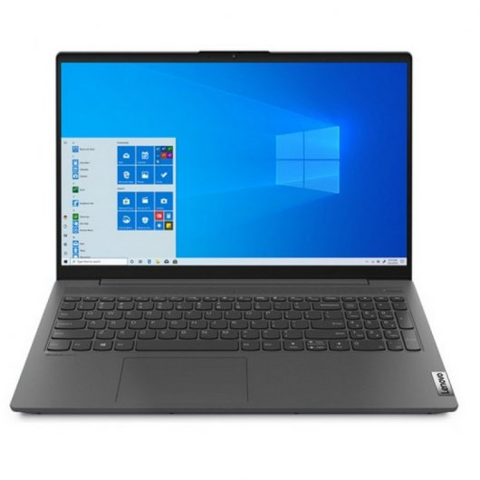
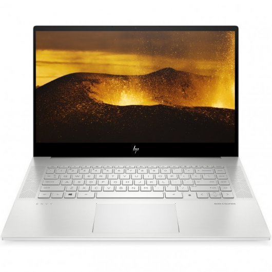
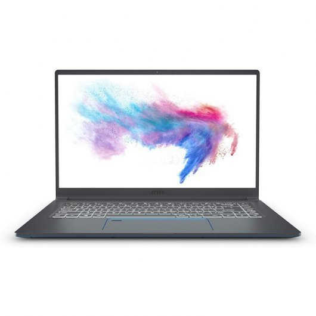
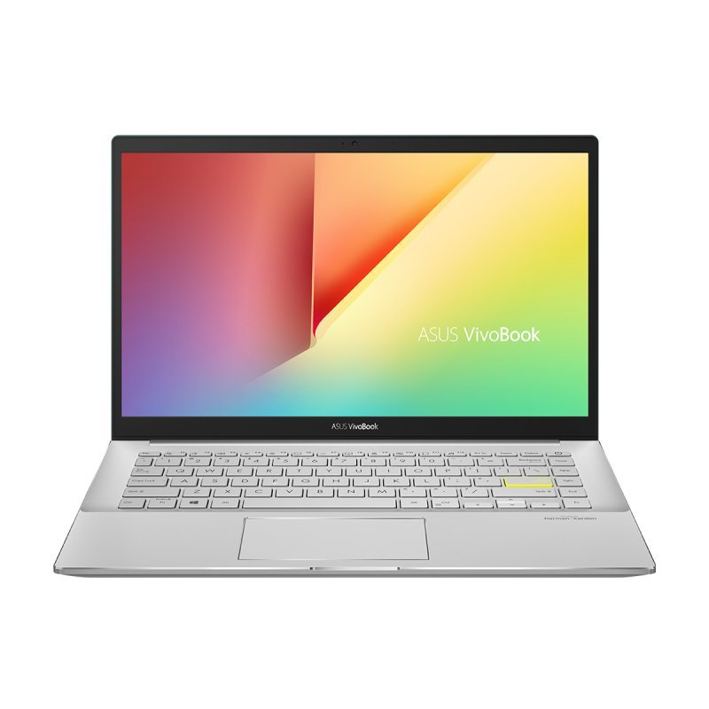
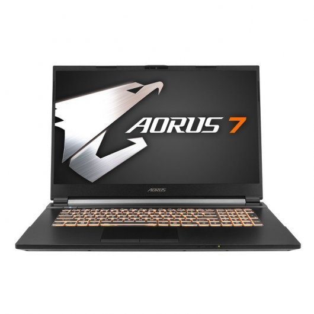

Lenovo IdeaPad 5
Echa un vistazo al IdeaPad 5 de 39,62 cm (15,6"). Los últimos procesadores Intel® Core™ de 10.ª generación aumentan el rendimiento, te permiten realizar fácilmente varias tareas a la vez y te ofrecen una extraordinaria experiencia de entretenimiento!
HP Envy 15
Tan ilimitado como tu imaginación. El rendimiento se une a la precisión. Aprovecha la potencia del portátil ENVY 15 con un procesador Intel® Core™, los impresionantes gráficos NVIDIA® GeForce® y la pantalla de alta definición para realizar creaciones en colores realistas con la mayor facilidad
MSI GL75 Leopard
Llega con un procesador i7-10750H y una RTX 2060 para permitirte llegar a lo más alto, disfruta del aumento de rendimiento de la 10ªGen y la serie RTX respecto a sus generaciones anteriores!
Asus Ultrabook 15"

Creatividad, estilo e innovación: Estas son las cualidades que definen el nuevo y elegante ZenBook 15, uno de los portátiles de 15" - 38,1 cm más pequeños del mundo. Su impresionante pantalla NanoEdge sin marco te ayuda a sacar el máximo provecho de tu poder creativo.
Asus VivoBook 14
ASUS VivoBook, un favorito perenne, está obteniendo un nuevo aspecto más audaz que seguramente acelerará los pulsos. El delgado y liviano VivoBook S14 ahora presenta bordes de corte de diamante y acabados texturizados, y está disponible en cuatro colores distintos que se han elegido para reflejar su personalidad.
Gigabyte AORUS 7
AORUS 7 : donde nacen las leyendas. ¡AORUS 7 , que es la sangre nueva de 144Hz de un portátil profesional para gaming en casa! El portátil para videojuegos AORUS 7 lidera la industria con el último procesador Intel 10th Gen Core i7-10750H de 6 núcleos, además de la tarjeta gráfica NVIDIA® RTX™.